We’ve already produced a simple map of crime in a neighbourhood, but we skipped over a lot of the details of how to do it. In this tutorial we will make another crime map, this time focusing more on each step in the process.
In this tutorial we will make a map of bicycle thefts in Vancouver in 2020. At the end of this tutorial, the final map will look something like this. We will then improve it further in a future tutorial on what makes a good map.
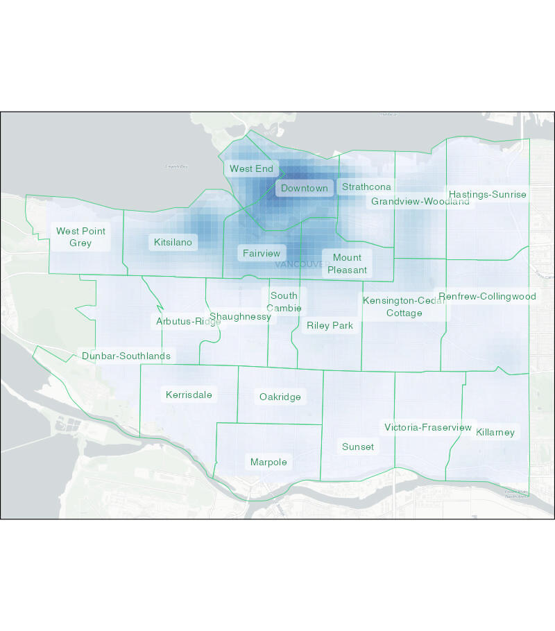
Before we get into the detail of how to make this map, watch this video that goes over the main points of the code we will use:
5.2 Handling spatial data
Maps are visual representations of spatial data. Spatial data is special because each row in the data is associated with some geographic feature such as a building, a street or the boundary of a neighbourhood. This adds some quirks that we have to understand to work with spatial data successfully.
5.2.1 Vectors and rasters
Spatial data can be represented in two general formats: vectors and rasters. Watch this video from the UK mapping agency Ordnance Survey to find out more about the advantages and disadvantages of using each type of data.
As you saw in the video, generally vector data gives you more control over the appearance of a map, but at the cost of your having to put together each part of the data yourself, choose the styles etc. In contrast, raster data (such as the base map of Atlanta we used in the first map we made for this course) gives you less control but allows you to add pre-formatted data to your map quickly.
5.2.2 Spatial layers
Maps are made up of multiple layers of spatial data that are styled to represent features of interest and then stacked on top of one another to make the finished map. Watch this video to learn more about spatial layers and the three different types of vector data that we can use in maps.
Points, lines and polygons in spatial data are known as geometric objects or simply geometries. Spatial data is data that has a geometric object associated with each row.
5.2.3 Representing places on the earth
Since maps are two-dimensional representations of the curved surface of the earth, map-makers must make choices about how to translate that curved surface onto a flat screen or piece of paper. This video introduces these choices, and explains why they are relevant to crime mapping.
With any spatial data, we need a way of describing where on the earth a particular point (such as the location of a crime or the corner of a building) is located. Watch this video to find out about the different co-ordinate systems we can use to do this.
5.3 Spatial data in R
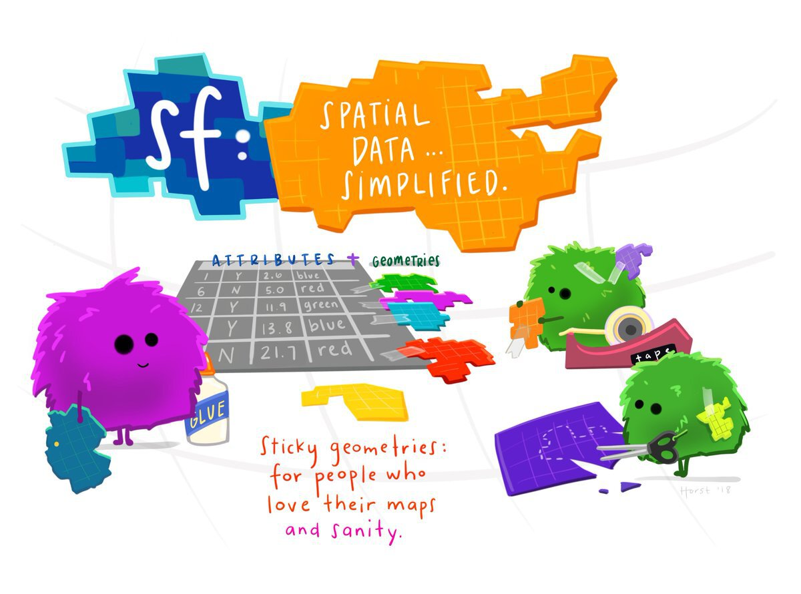
There are several packages that handle raster map data from different sources – one of them is the ggspatial package that we have already used to load the base map of Atlanta for the homicide map we made in one of the earlier tutorials.
Vector data can be handled in R using functions from the sf package. SF stands for ‘simple features’, which is a standard for storing spatial data. SF objects are data frames that have a special column to hold the geometry (point, line or polygon) associated with each row in the data. SF objects also understand what co-ordinate system the geometry are described in. This means SF objects can be transformed between co-ordinate systems and combined together in layers on a map.
There a lots of functions in the sf package for handling spatial data. Almost all of these functions begin with the letters st_ (e.g. st_read()), which makes it easy to identify that those functions are designed to be used on SF objects.
5.3.1 Reading spatial data
The special features of spatial data – needing to store geometries, details of the projection used etc. – mean that spatial data is often stored in special file formats. There are lots of spatial-data formats, but fortunately almost all of them can be read by the st_read() function. This means we do not need to learn a different function for each spatial-data format.
While datasets with line or polygon geometries must almost always be stored in specific spatial-data formats, point data can also be stored in common data formats such as Excel and CSV files. The data for this tutorial is provided by the Vancouver Police Department in a CSV file (gzipped to reduce the file size). The file is located at:
Thinking back to the tutorial on data wrangling, we can use the read_csv() function from the readr package to load this data into a tibble called thefts
# Since the data are stored in a regular CSV file, we can use the `read_csv()`# function from the readr package to read the file, and the assignment operator# `<-` to store the data in the object `thefts`. `read_csv()` can read directly# from a URL, so there is no need to download the data first.library(tidyverse)thefts <-read_csv("https://mpjashby.github.io/crimemappingdata/vancouver_thefts.csv.gz")
Now that you have stored the data in the thefts object, we can use the head() function to view the first few rows of data.
head(thefts)
The data consists of 21,918 rows, each representing one theft. Before we can map this data, we will need to do some minor data wrangling to get it into the format we want.
5.3.2 Cleaning column names
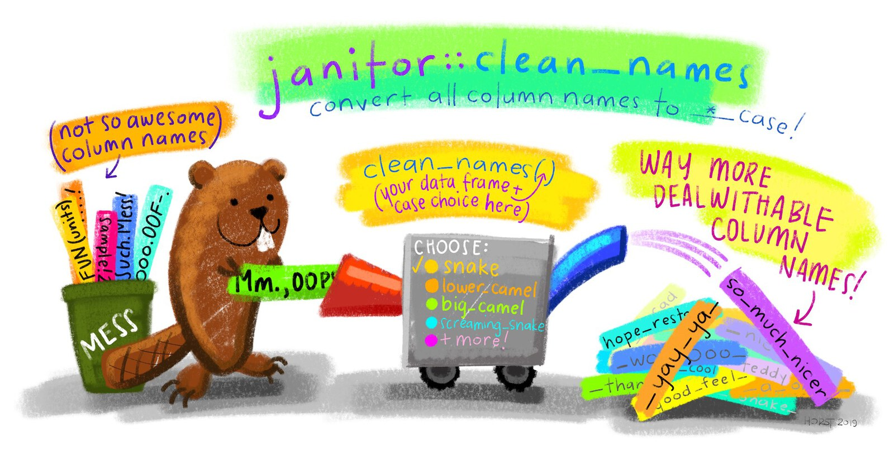
In a previous tutorial I recommended choosing snake_case object names, e.g. calling a data object atlanta_robberies_2020 rather than atlantarobberies2020, AtlantaRobberies2020 or ATLANTAROBBERIES2020. This makes your code easier to read and means you don’t have to remember whether you named a variable using upper- or lower-case letters, since you know that you only use lower case.
The same recommendation applies to variable names in datasets, for the same reasons. Doing this makes it much easier to refer to objects and columns in your code, without having to worry about whether a particular letter was upper- or lower-case, or whether it had an accent etc.
At the moment, the column names in the thefts dataset are upper-case letters. Rather than having to remember this, we can easily convert them to snake case using the clean_names() function from the janitor package. To use a function from a package, we usually first load the package using the library() function. In this case, we probably won’t want to use any other functions from the janitor package, so instead of loading the whole package we will use this one function directly. To do this, we write the function name with the package name added to the front, separated by two colons ::.
You can see that the data has stayed the same but all the column names are now in snake case. clean_names() would also have replaced any spaces with underscores, tried to separate words in the variable names and cleaned up several other potential problems. For this reason it is common to call janitor::clean_names() straight away after loading a dataset so that you can be confident that the column names will be in the format you expect.
If we wanted to use the clean_names() function again, we would have to include the package name and :: each time, so if our code was going to make repeated use of the function then it would probably be easier to load the package using the library() function as we have done in previous tutorials.
5.3.3 Converting our data to an SF object
At present, the data in the thefts object is just a regular tibble. We could not use it to make a map because R does not know which columns represent the geometry, or what co-ordinate system the locations are recorded in. We can deal with this by converting the data to an SF object using the st_as_sf() function from the sf package.
The data provided by the Vancouver Police use the UTM zone 10N co-ordinate system. UTM is a system for assigning co-ordinates to any location on earth relative to a local origin point for the UTM zone covering that part of the planet. It is therefore similar to the British National Grid that we have already learned about, but for any part of the globe. The ‘N’ at the end of the zone name refers to the northern hemisphere.
In almost all cases, co-ordinate reference systems only work for the part of the world that they were designed for. So we should not use the UTM zone 10N co-ordinate system to map data outside the area for which it was designed (broadly speaking, the west coast of North America from Los Angeles to Vancouver, and the part of Canada directly north of Vancouver extending as far as the north pole). If we were to use the UTM zone 10N co-ordinate system for data from another part of the world, we would be very likely to get error messages or strange results.
We can convert the thefts tibble to an SF object using the st_as_sf() function (remember, all functions in the sf package start with st_, which can sometimes make the function names a little confusing). We specify which columns in the data represent the geometry (in this case, the x and y columns), and what co-ordinate system the data uses.
Co-ordinate systems can be specified in lots of ways (some very complicated), but the easiest is to specify the EPSG code for the relevant system. An EPSG code is a unique reference number for a particular co-ordinate system that R can look up in a database to get the information needed to display the data on a map. The EPSG code for the UTM zone 10N is EPSG:32610.
If you look at the contents of the thefts_sf object, you’ll see that there is a new column called geometry (you may need to use the ▸ button to see it). This column contains the co-ordinates of each bike theft in a format that R recognises represent locations on the surface of the earth, which means they can be used to make maps.
5.3.4 Finding bike thefts in our data
If you look through the contents of the thefts_sf object, you will see that not all of the rows relate to bicycle thefts. The type column shows that the dataset also includes thefts from vehicles, for example. To choose only those rows containing bicycle thefts, which function from the dplyr package would we used? If you need help, you can think back to the data-wrangling tutorial or have a look at the Data transformation with dplyr cheat sheet.
Thinking back to the chapter on data wrangling, we can use the filter() function to choose only the rows of data that relate to bicycle thefts and store it in a new object called bike_thefts
bike_thefts <-filter(thefts_sf, type =="Theft of Bicycle")
Our data is now ready for us to make our crime map!
Now that we have our data, we can use it to create a map of bicycle theft in Vancouver. Before we start, let’s take another look at our dataset so that we know which columns contain which data.
head(bike_thefts)
Simple feature collection with 6 features and 10 fields
Geometry type: POINT
Dimension: XY
Bounding box: xmin: 488371.3 ymin: 5452696 xmax: 494295.1 ymax: 5458232
Projected CRS: WGS 84 / UTM zone 10N
# A tibble: 6 × 11
type year month day hour minute hundre…¹ neigh…² x y
<chr> <dbl> <dbl> <dbl> <dbl> <dbl> <chr> <chr> <dbl> <dbl>
1 Theft of Bicycle 2020 1 1 0 0 12XX VE… Strath… 4.94e5 5.46e6
2 Theft of Bicycle 2020 1 1 0 0 20XX MA… Kitsil… 4.89e5 5.46e6
3 Theft of Bicycle 2020 1 1 13 0 7XX PAC… Centra… 4.92e5 5.46e6
4 Theft of Bicycle 2020 1 1 20 0 53XX VI… Arbutu… 4.88e5 5.45e6
5 Theft of Bicycle 2020 1 3 11 55 65XX AN… Kerris… 4.89e5 5.45e6
6 Theft of Bicycle 2020 1 3 14 0 4XX E 1… Mount … 4.93e5 5.46e6
# … with 1 more variable: geometry <POINT [m]>, and abbreviated variable names
# ¹hundred_block, ²neighbourhood
5.4.1 Introduction to ggplot2
A map is a specialised type of chart, so we can make maps using the ggplot2 package that is widely used to create other types of chart in R. ggplot2 charts are made up of layers, so they’re well suited to making maps.
The most-basic map that we can make simply plots the locations of crimes with no context. This almost never makes a good crime map, but we can use this type of map as the foundation around which we can build a better map.
ggplot2 plots work by building up a chart using different functions, each of which adds or modifies some part of the chart. Building a plot starts with calling the ggplot() function, with each subsequent function being added to the plot definition using the + operator. Note that while the package is called ggplot2, the function in that package used to create plots is called ggplot(), notggplot2().
The most-important of the ggplot2 functions are those beginning with geom_, which add graphical elements to the chart. If you want to add a layer to your chart showing a scatter plot, you use the geom_point() function, while if you want to make a line chart you use geom_line().
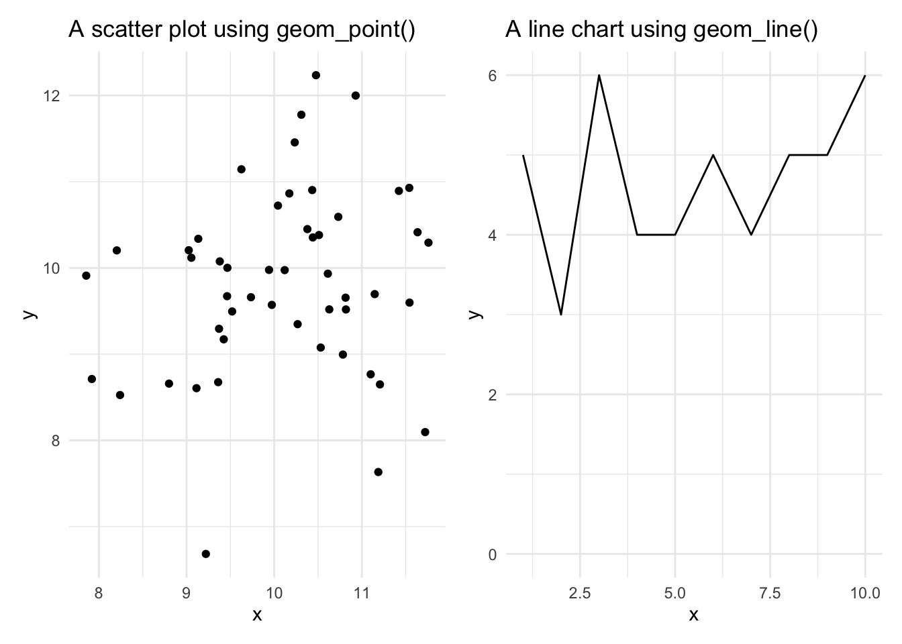
There are lots of geom_ functions available for representing data on charts in different ways. For maps, the SF package includes the geom_sf() function that is designed to add spatial data (in the form of an SF object such as our bike_thefts data) to a chart, making it into a map. So to simply plot the points in our bicycle-theft data, we can use the code:
By convention, each function that we add to ggplot() to change the appearance of our map goes on a new line (this makes the code easier to read) and all but the first line is indented by two spaces. RStudio does this indenting automatically if the previous line ends with a + symbol, since RStudio then understands that there is more code to come on the next line.
This map shows the bike-theft data, but it is obviously not a very useful map. Fortunately, we can use the features of the ggplot2 package to build on this basic map.
5.4.2 Controlling aesthetics
We can change the appearance of the points by specifying various arguments to the geom_sf() function. These arguments are called aesthetics, because they control the aesthetic appearance of the geometric objects (points, lines etc.) produced by a geom_ function. There are lots of aesthetics, but some of the most common are:
colour controls the colour of points and lines (for polygons, it controls the colour of the border around the polygon edge) – you can also use the spelling color for this argument and get an identical result,
fill controls the colour used to fill polygons or points that use a shape capable of having different colours in the centre and around the edge (fill has no meaning for lines),
shape controls the shape (circle, triangle, square etc.) of points (it has no meaning for lines or polygons),
size controls the size of points and text,
linewidth controls the width of lines, including the borders around the edges of polygons, and
alpha controls the transparency of a layer (alpha = 1 equals fully opaque, alpha = 0 means fully transparent).
colour and fill can be specified using any one of 657 R colour names or using a hexidecimal (‘hex’) colour code. Values of size don’t relate to any unit of size (e.g. millimetres or points), so it’s easiest to set the size of points and text by trial and error.
There are 25 built-in shapes for points in R (shape 16 is the default):
We can change the code above so that the points on our map are red squares instead of black circles (red is one of the 657 R colour names).
# Add the arguments `shape = 15` and `colour = "red"` to the `geom_sf()`ggplot() +geom_sf(data = bike_thefts, shape =15, colour ="red")
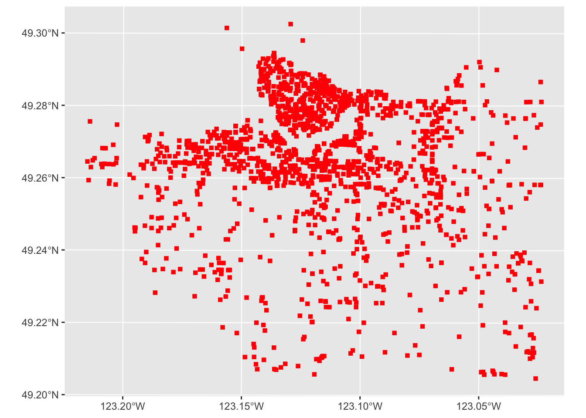
As we have said, this basic map is not very useful. We can see that there seems to be a cluster of bike thefts towards the top (north) of the map, but it is difficult to see how important this cluster is because so many of the points overlap. Overlapping points are a particular problem in maps, because if there are multiple crimes at the same location then the points representing those crimes will be exactly on top of one another and it will be impossible to see whether there is one crime at a particular location or 100.
One way to deal with this problem is to make the points semi-transparent so that overlapping points appear darker. This often works better if we also make the points slightly smaller at the same time. We can use the alpha and size aesthetics to make the points smaller (relative to the default for points of size = 1) and semi-transparent.
# Which values you chose will depend on your personal aesthetic preferences,# but these values produce a map that makes it easier to see the distribution of# pointsggplot() +geom_sf(data = bike_thefts, size =0.75, alpha =0.1)
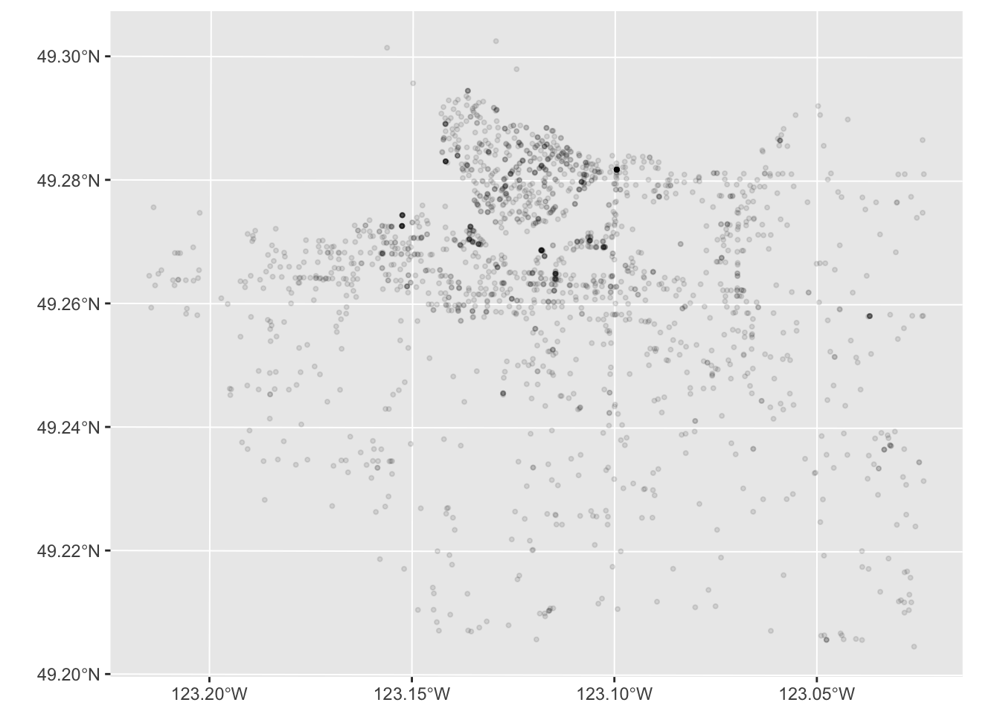
Making the points semi-transparent goes some way to making it easier to see where bike theft is most common in Vancouver, but the pattern is not clear and it is not possible to tell which darker points represent a handful of crimes at the same location and which represent hundreds of crimes at the same location. To make our map useful, we need to use a different technique.
5.5 Mapping crime density
Unless we want to produce a map of only a very small number of crimes (like the Atlanta downtown homicides map we produced in a previous tutorial), it is unlikely that a point map will be very useful.
In fact, if you find yourself making map with each crime represented by a separate point, you should probably stop and ask yourself if that is really the best way to achieve your goal.
A better way to show where crime is concentrated on a map is to work out the density of crime in each area and then map that density. By density in this context, we mean the relative concentration of points in each part of the area we are studying, i.e. how many points (representing bike thefts) are there in each part of the map relative to all the other areas of the map.
To estimate the density of points in different areas of the map, R uses a technique called kernel density estimation (KDE). To do this, R must:
divide the map into a grid of cells, each the same size,
count the number of points in each cell,
for each cell, count the number of points in nearby cells, but give less weight to (i.e. systematically undercount) those cells that are further away,
for each cell, total up the count of points in that cell and the (weighted) count of points in nearby cells – this is the estimate of the density of points in that cell.
This procedure has the effect of producing a smooth surface representing crime density.
We don’t need to worry at this point about the details of how the counts are used to estimate the density of crimes – we will return to this in a later tutorial.
There are several ways we can make density maps in R. In this course we will use the sfhotspot package because it makes reasonable decisions about how or density maps should look, while still giving us control over their appearance if we want it. sfhotspot also has other useful functions that we will use in future tutorials.
To create a density map using sfhotspot, we first use the hotspot_kde() function to convert a dataset of offence locations to an estimate of the density of offences for each cell in a grid. hotspot_kde() automatically chooses how big the cells in the grid should be (but we can set this ourselves if we want to).
The bike_theft_density object created by hotspot_kde() contains three columns: n contains the count of bike thefts in each cell, kde contains the estimate of the density of thefts in each cell, and geometry contains the outline of each grid cell.
Since hotspot_kde() produces an SF object, we can add it to a map using the geom_sf() function. We can also use the fill aesthetic to specify that the fill colour of each grid cell should be determined based on the values of the kde column in the bike_theft_density object.
ggplot() +geom_sf(aes(fill = kde), data = bike_theft_density, colour =NA)
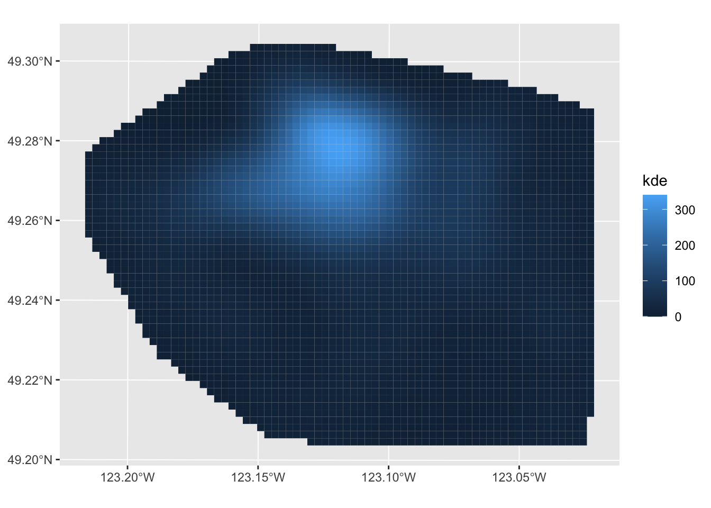
We have already seen that we can set aesthetics such as colour and shape manually, but the aes() function allows us to specify that the values of different aesthetics should be controlled by columns in the data. The aes() function takes as its arguments pairs of values (combined with an = symbol) where the first value is an aesthetic and the second value is the name of a column in the data. For example, to use the colour of points on a map to represent different types of crime that were stored in a column in the data called type, we could use aes(colour = type).
When should you specify the values of aesthetics inside aes() and when should you do it outside aes()?
If you want an aesthetic to have a constant value for all the points, lines or other shapes in a layer, control the aesthetic outsideaes(). For example, you could use geom_sf(bike_thefts, colour = "mediumblue") to make all the shapes in that layer blue.
If you want to vary the appearance of shapes according to values in the data, you should control the aesthetic insideaes(). For example, you could use geom_sf(aes(colour = month), bike_thefts) to vary the colour of shapes in a layer according to values of the month column in the data.
aes() must be the first argument in the geom_*() function.
In this map, instead of seeing each crime as a separate point, we see the density of crime as the filled colour of cells in a grid. By comparing this density map to the point map we produced before, we can see that the density map makes the areas with the highest frequency of thefts easier to identify.
You can also see that our map now has a legend, showing that higher densities of bike thefts are shown on the map in dark blue and lower densities are shown in light blue. The exact values shown in the legend are not particularly meaningful, so we can ignore these for now.
5.5.1 Fine-tuning density maps
We can control the appearance of KDE maps in several ways. For example, we can vary the number of cells in the grid and the definition of what cells the kernel density estimation process should consider to be ‘nearby’ for the purposes of calculating weighted counts. Cells are considered to be ‘nearby’ to a particular cell if they are closer to that cell than a distance known as the KDE bandwidth.
By default, hotspot_kde() chooses the cell size and the bandwidth automatically. The maps below show how changing these defaults changes the appearance of our map (with the legend and axes removed to make the small maps clearer).
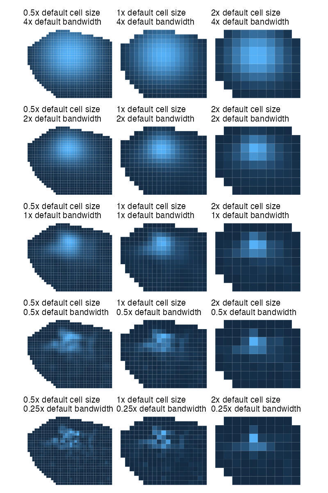
By looking at the maps on the right-hand side, you can see that reducing the number of grid cells leads to a map that looks blocky and lacks information. Looking at maps higher up, you can see that increasing the bandwidth relative to the default makes the density surface smoother. The smoother the surface, the less detail we can see about where crime is most concentrated, until on the top row we can see almost no information at all. On the other hand, if we reduce the bandwidth too much (the bottom row of maps) then almost no ‘nearby’ cells are included in the count and so it becomes more difficult to identify patterns.
In most cases, you will not need to change the cell size used in calculating the density of points on a map, but if you do then you can do this using the cell_size argument to hotspot_kde().
Although you can set the bandwidth manually using the bandwidth argument to hotspot_kde(), you will almost never want to do this. Instead, you can vary the bandwidth relative to the automatically chosen default bandwidth by using the bandwidth_adjust argument. For example, if you wanted to see more detail in your map by using a smaller bandwidth, you could use adjust = 0.5 or adjust = 1/2 to set the bandwidth to be half of the default bandwidth.
# You can set either `bandwidth_adjust = 1/2` or `bandwidth_adjust = 0.5` to # get the same resulthotspot_kde(bike_thefts, bandwidth_adjust =1/2) |>ggplot() +geom_sf(aes(fill = kde), colour =NA)
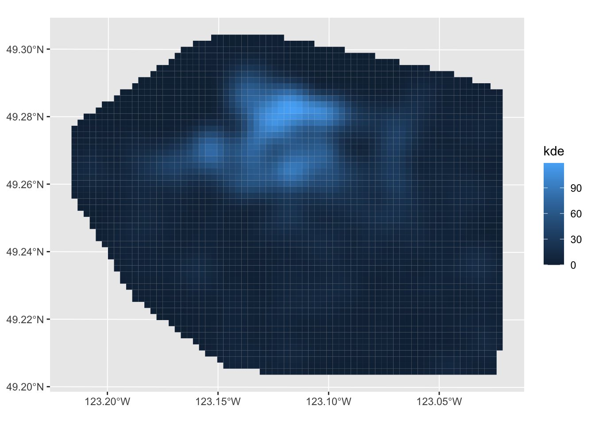
Comparing this map to the first density map we produced, we can see that the slightly smaller bandwidth means we can see slightly more detail in the patterns of bike thefts.
I recommend using a slightly smaller bandwidth than the default, so that your maps show a bit more detail. Try setting bandwidth_adjust = 0.5 whenever you produce a density layer using hotspot_kde(), but remember to look at the map to see if you are happy with the result.
The final way we can control the appearance of our density layer is to change the colour scheme used to represent density. To do this, we can use another type of ggplot2 function: scales. There are lots of scales available, but the scale_fill_distiller() function produces several different colour scales that are specifically designed to be effective on maps.
All the available colour schemes are on the Color Brewer website. Colour schemes can be divided into three types:
sequential colour schemes are useful for showing values from low to high,
diverging colour schemes are useful for showing values relative to a meaningful central point, and
qualitative colour schemes are useful for showing separate categories that can appear in any order and still be meaningful.
In crime mapping we’re usually interested in showing how crime varies from low to high, so we need to use a sequential colour palette. There are 18 sequential colour schemes (or palettes) available in scales_fill_distiller(), each with a name:
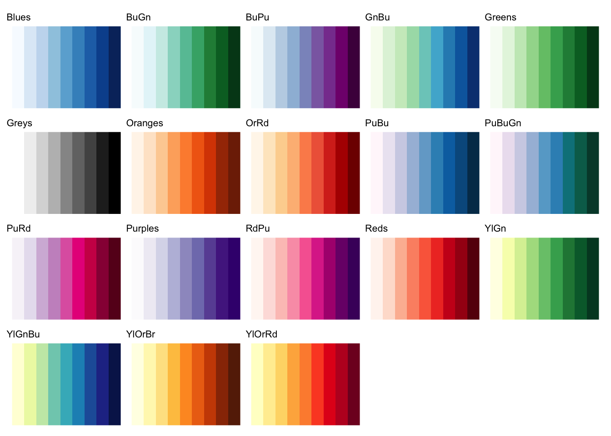
It is important to only use the right type of colour scale in the right circumstances, since using the wrong type of scale could end up misleading people reading your map. For example, a diverging colour scale gives the strong impression that the central point in the scale is meaningful.
In some circumstances this might be useful, for example if you wanted to show areas in which crime had increased in shades of one colour and areas in which crime had decreased in shades of another colour. In that case, a diverging scale would be appropriate because the central point represents something meaningful: no change in crime. If the central point is not meaningful, use a sequential colour scheme instead.
If you want to represent a categorical variable, you should use a categorical colour scale unless the categories have a natural order. For example, if you wanted to show ethnic groups on a map you would use a categorical colour scale since there is no one order of ethnic groups that is any more meaningful than any other. If you wanted to represent days of the week with colour, then you might want to use a sequential colour scheme since the days of the week have a meaningful order.
By default, scale_fill_distiller() sets the lowest values to have the darkest colour. This often does not work well, but we can change this by setting the argument direction = 1. I recommend doing this in all cases.
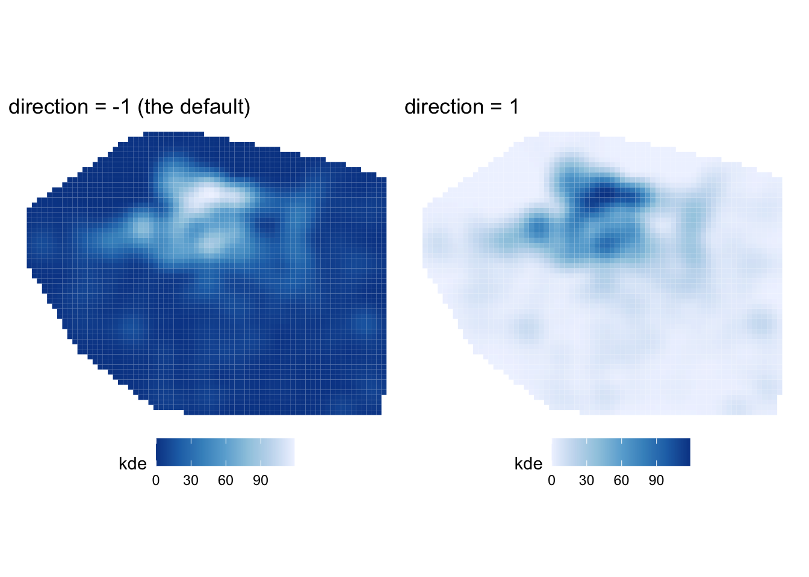
You can think of all the functions that we can add to ggplot() as being like a stack of pancakes, with each new function being placed on the top of the stack. To change the colour of our map, we just add scale_fill_distiller() to the existing stack.
ggplot() +geom_sf(aes(fill = kde), data = bike_theft_density, colour =NA) +scale_fill_distiller(palette ="Oranges", direction =1)
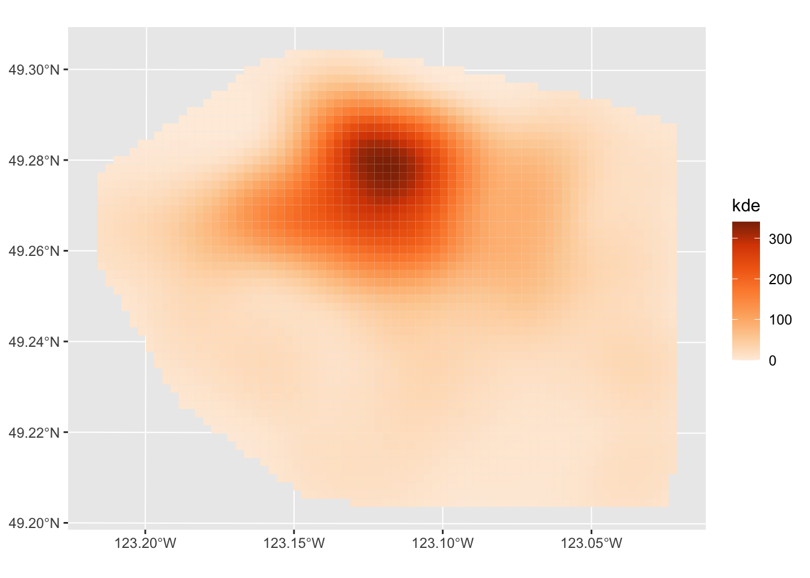
5.6 Clipping map layers
There is one limitation of the KDE layer on our map that we need to deal with. The area covered by the KDE layer is determined by the area covered by the point data that we provided to hotspot_kde(). More specifically, hotspot_kde() will calculate density values for every cell in the convex hull around the point data, i.e. for the smallest polygon that contains all the points in the data.
This can be a problem in some circumstances, because we do not necessarily have crime data for all the areas within the convex hull of the data, even though KDE values will be calculated for those areas. This could be misleading, since it will look like such areas have low crime density, when in fact we do not know what the density of crime in such areas is.
Fortunately, we can easily deal with this problem by clipping the KDE layer to the boundary of the area for which we have crime data. This means we will only show densities for cells for which we actually have data.
A. We only have data on bike thefts from the City of Vancouver, so all the bike thefts in the data necessarily occurred within the city. We do not know what the density of crime outside the city is.
B. The KDE function only knows the theft locations, not the area in which thefts could have occurred. So the convex hull created by the KDE layer will not necessarily match the area of the data.
C. In this case, that means some areas (shaded) will be included in the KDE layer even though they happened outside the area covered by the data, which could be misleading.
D. To avoid suggesting we know the density of crimes in areas for which we do not have data, we should clip the KDE layer to the boundary of the area for which we have data.
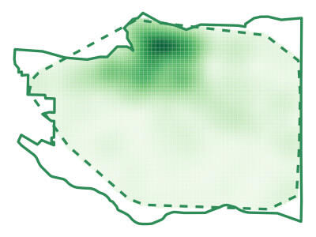
We can clip the KDE layer produced by hotspot_kde() to the boundary of the City of Vancouver using the st_intersection() function from the sf package. st_intersection() removes any rows from the dataset provided as the first argument that do not fall within the area covered by the dataset provided as the second argument. If we have the boundary of the City of Vancouver stored in an object called vancouver_boundary and the a KDE layer showing the density of bike thefts stored in the bike_theft_density object, we can use st_intersection() to remove any cells in bike_theft_density that are outside vancouver_boundary.
# Before clipping the KDE layer, we can use the `nrow()` function to check how# many cells there are in the KDE grid (each grid cell is one row in the data)nrow(bike_theft_density)
[1] 3318
# Clip the density layerbike_theft_density_clip <-st_intersection( bike_theft_density, vancouver_boundary)
Warning: attribute variables are assumed to be spatially constant throughout all
geometries
# Now we can check the number of rows in the clipped layer, which will be# lower than in the original KDE layernrow(bike_theft_density_clip)
[1] 2927
st_intersection() produces a warning message:
Warning: attribute variables are assumed to be spatially constant throughout all
geometries
As long as you are simply using st_intersection() to remove parts of the data outside a boundary, you can ignore this message.
In most cases, we can use the pipe operator to clip a KDE layer just after we produce it with hotspot_kde():
The st_intersection() function requires that both spatial layers have the same co-ordinate system. If the two layers use different co-ordinate systems, you will need to transform one of the layers using st_transform() so that it uses the same co-ordinate system as the other layer.
If you do not know which co-ordinate systems the layers use, you can use the st_crs() function to extract the co-ordinate system from one layer and pass that value as the second argument to st_transform(). For example:
The density map we have made is much more effective than a point map at allowing us to identify where the highest number of bike thefts in Vancouver occur. However, it’s still quite difficult to know where those places are, because we cannot easily work out where in the city these places are. We can make this much easier by adding a base map underneath the density layer.
We can add a base map using annotation_map_tile() function from the ggspatial package. We can add annotation_map_tile() to a ggplot() stack in the same way that we would add geom_*() functions.
ggplot() +# We add the base map to the `ggplot()` stack *before* the density layer # because we want the base map to appear below the density layerannotation_map_tile(zoomin =0) +# When adding a base map, it is useful to make any filled layers (such as the# density layer) semi-transparent so that readers can see the base mapgeom_sf(aes(fill = kde), data = bike_theft_density_bw_half, alpha =0.67, colour =NA ) +scale_fill_distiller(palette ="Purples", direction =1) +theme_void() +# Suppress the map legend -- we will learn more about these next lines of code# in a future tutorialtheme_void() +theme(legend.position ="none")
Zoom: 12
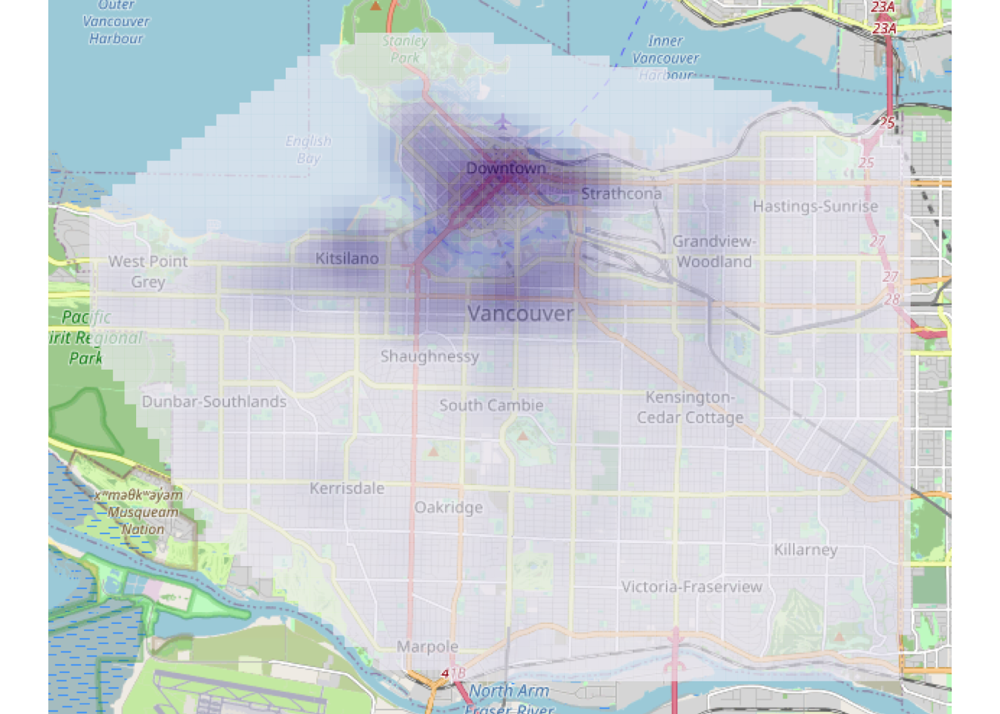
The base maps returned by annotation_map_tile() are available at many different zoom levels, from level 1 that is useful for mapping the whole world in one map, to level 20 that can be used to map a single building. By default, annotation_map_tile() downloads tiles with slightly less detail than we might want, but we can fix this by using the argument zoomin = 0. We could also set a specific zoom level using the zoom argument.
For example, these maps show the same area around the UCL Jill Dando Institute with base maps at different zoom levels.
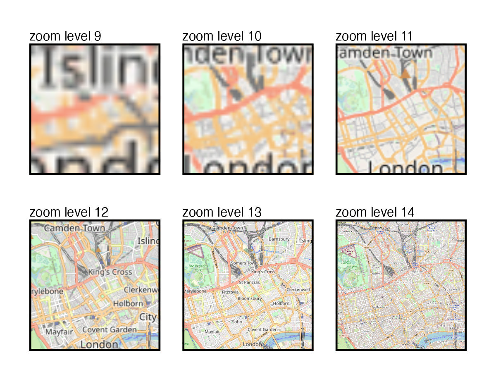
Choosing the right zoom level is a matter of balancing the level of detail in the map and the clarity of the image. In the maps above, zoom levels less than 12 tend to have pixelated images because they do not contain enough detail, while zoom levels greater than 12 contain too much detail and so the information is hard to read. But if this map covered a smaller or larger area, a different zoom level might be better. In general, setting zoomin = 0 and not setting any value for the zoom argument – so that annotation_map_tile() chooses the zoom level automatically – will produce an acceptable map.
annotation_map_tile() also gives us access to several different types of base map. The default style (seen in the maps above) is called ‘osm’ because it is the default style used by Open Street Map, the organisation that provides the map data. We can specify which style of base map we want using the type argument to annotation_map_tile().
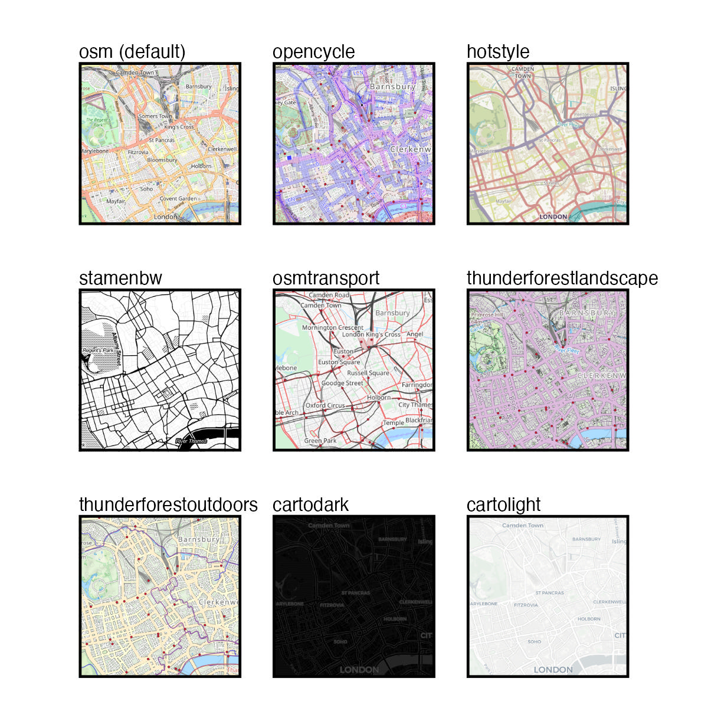
5.8 Adding more layers
Adding a base map underneath our density layer makes it much easier to understand where the highest densities of bike theft in Vancouver are. But our map could make it easier still to see where clusters of thefts occur. We could, for example, add the names of different neighbourhoods in the city, and show the city limits so that we can tell which areas have no crime because crimes in those areas are not included in our data.
In an earlier section I suggested we can think of ggplot charts, including maps, as being like stacks of pancakes – each function we use to amend the appearance of our chart is added to the top of the stack. So to add another layer to our map, we just add another geom_ function to our plot.
The City of Vancouver provides boundary data for city neighbourhoods on its website in GeoJSON format. This is a spatial data format, so it can be read by st_read(). We can then add the layer to our map using geom_sf() in the same way as for the point layer in our first map.
# This is a version of the data saved from the City of Vancouver website, so # that this tutorial continues to work if the original data is ever removednbhds <-st_read("https://mpjashby.github.io/crimemappingdata/vancouver_neighbourhoods.geojson")
Reading layer `vancouver_neighbourhoods' from data source
`https://mpjashby.github.io/crimemappingdata/vancouver_neighbourhoods.geojson'
using driver `GeoJSON'
Simple feature collection with 22 features and 3 fields
Geometry type: POLYGON
Dimension: XY
Bounding box: xmin: -123.2248 ymin: 49.19894 xmax: -123.0232 ymax: 49.29581
Geodetic CRS: WGS 84
At the same time, we can also add labels to the plot at the centre of each neighbourhood using the geom_sf_label() function. We use the aes() function to specify which column in the nbhds dataset we want to use for the label text. Normally, we would use the code aes(label = name) to do this, but in this case we want to wrap the labels so that they don’t overlap adjacent neighbourhoods, To do this we can use the str_wrap() from the stringr package (part of the tidyverse), so that our code instead becomes:
aes(label =str_wrap(name, width =10))
The geom_sf_label() function in the map below uses quite a lot of arguments to control the appearance of the labels:
alpha = 0.5 to make the label background semi-transparent so that we can see the density layer underneath it,
colour = "seagreen3" to slightly reduce the prominence of the label text to avoid distracting attention from the density layer,
lineheight = 1 to reduce the gap between lines in each label,
size = 2.5 to slightly reduce the size of the label text,
label.size = NA to remove the default border around the label background.
Putting all this together, we get our final map:
# Load packageslibrary(ggspatial)library(sf)library(sfhotspot)library(tidyverse)# Load databike_thefts <-read_csv("https://mpjashby.github.io/crimemappingdata/vancouver_thefts.csv.gz") |> janitor::clean_names() |>st_as_sf(coords =c("x", "y"), crs ="EPSG:32610") |>filter(type =="Theft of Bicycle")nbhds <-st_read("https://mpjashby.github.io/crimemappingdata/vancouver_neighbourhoods.geojson")# Create KDE layerbike_theft_density_clip <- bike_thefts |># Calculate densityhotspot_kde(bandwidth_adjust =0.5) |># Transform the density data to use the same CRS as the neighbourhoods layerst_transform("EPSG:4326") |># Clip the density layer to the area for which we have datast_intersection(nbhds)# Plot mapggplot() +# Add base mapannotation_map_tile(type ="cartolight", zoomin =0) +# Add density layergeom_sf(aes(fill = kde), data = bike_theft_density_clip, alpha =0.75, colour =NA ) +# Add neighbourhood boundaries (note `fill = NA` stops the neighbourhood# shapes being filled with a colour, which would obscure the density layer# underneath)geom_sf(data = nbhds, colour ="seagreen3", fill =NA) +# Add neighbourhood namesgeom_sf_label(aes(label =str_wrap(name, 10)), data = nbhds, alpha =0.5,colour ="seagreen", lineheight =1, size =2.5,label.size =NA ) +# Set the colour scalescale_fill_distiller(direction =1) +# Remove the axes, legend and other elements from the map that we don't needtheme_void()
Zoom: 12
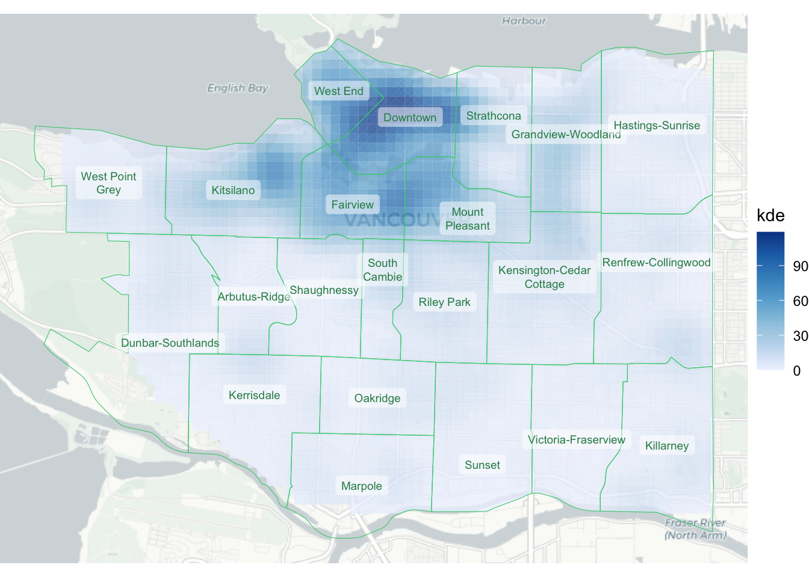
Now we can see that bike theft in Vancouver is heavily concentrated in a handful of neighbourhoods, particularly the Downtown and West End neighbourhoods. This map is much more useful than the first map that we produced in this tutorial showing only the point location of each crime, since in this latest map we can see not only the greatest concentrations of bike thefts but how they relate to the different areas of the city.
5.9 In summary
In this tutorial we have learned to produce a density map of crime. This type of map can be very useful in identifying where practitioners should focus efforts to respond to crime. For example, a map like this might help local police to decide where to send officers to carry out extra patrols, while a crime-prevention charity might decide to run events in particular areas to educate people on how best to protect their bikes.
In the next tutorial, we will learn how to improve this map further.
You can find out more about some of the things we have covered in this tutorial using these resources:
Understand more about the history of trying to develop accurate map projections in this short video: Why all world maps are wrong.